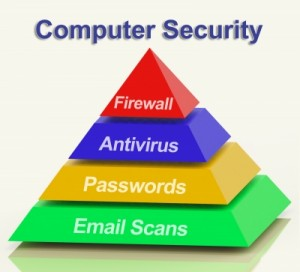

CLICK TO GO HOME

CLICK LINKS BELOW FOR SOME FOOD FOR THOUGHT...
STILL UNSURE ABOUT WHAT COMPUTER SECURITY IS?
COMPONENTS OF COMPUTER SECURITY

HOW YOUR DATA MAY BE AT RISK...
ALARMING CYBER SECURITY FACTS THAT THREATEN YOUR DATA

HOW HAS COMPUTER SECURITY DEVELOPED OVER THE YEARS?
ADVANCES IN COMPUTER SECURITY WITHIN 25 YEARS...